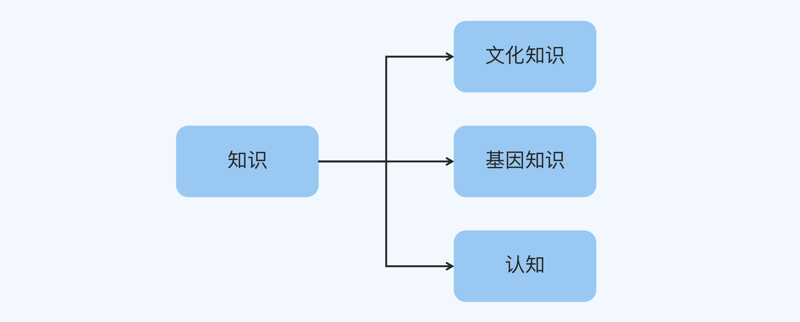
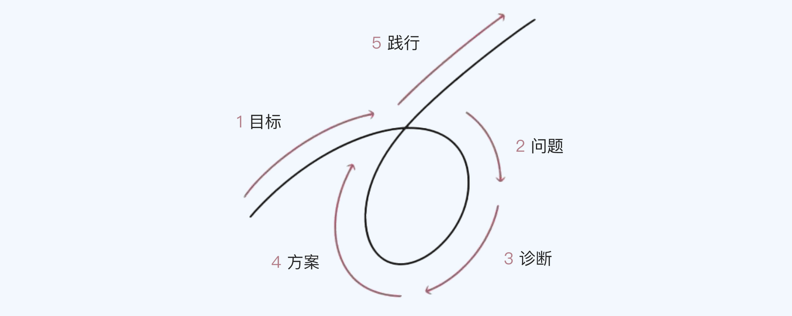
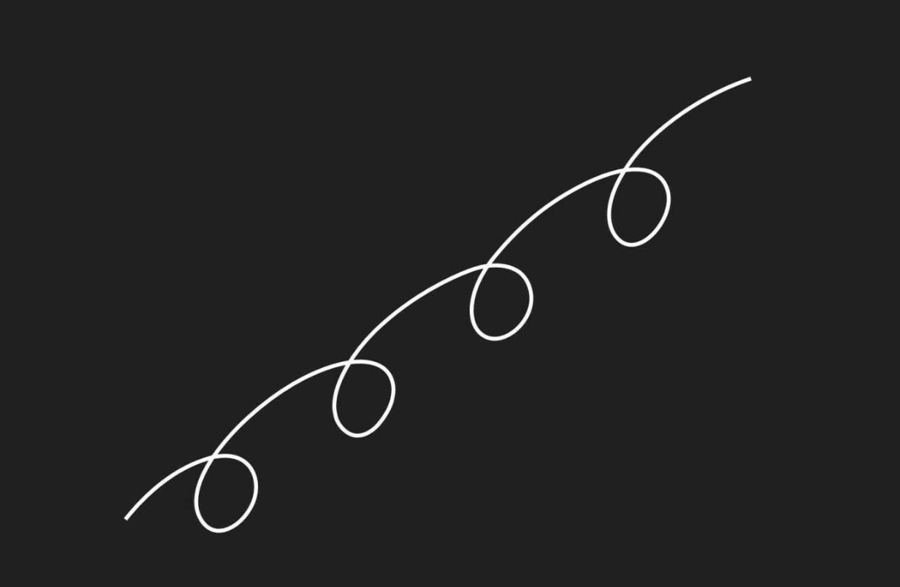

- 00 开篇词 为什么每个人都应该学会复盘？.md.html
- 01 CLAP模型：一个优秀的复盘模型是什么样的？.md.html
- 02 OPTM框架：怎么使用CLAP模型？.md.html
- 03 教练技术：怎么做复盘才能化解冲突？.md.html
- 04 制度和文化：怎么营造复盘环境？.md.html
- 05 三角法：怎么组建复盘团队？.md.html
- 06 MECE原则：怎么准备复盘资料？.md.html
- 07 五步法：如何召开一次高效的复盘会议？.md.html
- 08 事实比较：如何快速比较目标与结果？.md.html
- 09 分析原因：梳理逻辑时怎样找到切入点？.md.html
- 10 洞察规律：怎样更新认知才能找准发力点？.md.html
- 11 OKR：怎样根据复盘结论制定计划？.md.html
- 12 Double Check：怎么检查评估一次复盘的效果？.md.html
- 13 案例导学：我是怎么帮助企业做复盘的？.md.html
- 14 战略升级：5年增长100倍的跨境电商做对了什么？.md.html
- 15 业务关键点：改进一个点业绩增长50%？.md.html
- 16 组织结构设计：变动一个职位，就能带来100万_月的增量吗？.md.html
- 17 高效赋能：怎么建立流程才能把人效提升3倍？.md.html
- 18 人才培养：怎么把人才转化成实际生产力？.md.html
- 19 预算制定：人头和财务预算到底怎么定？.md.html
- 春节荐书（一）《原则》：在不确定中找到确定.md.html
- 春节荐书（二）《人类简史》：故事的力量.md.html
- 结束语 复盘，见天地见众生见自己.md.html
- 捐赠
春节荐书（一）《原则》：在不确定中找到确定
你好，我是张鹏。
今天，我想跟你推荐一本帮助理解复盘的书，《原则》，它的作者是桥水基金的创始人瑞·达利欧。
桥水基金在过去20年的时间，创造了超过20%的年均投资回报率，累计盈利450亿美金，远超历史上所有的对冲基金。成功的心法，瑞·达利欧就写在了《原则》这本书里。
原则有什么用？
这本书的一开始有这么一句话：“不管我一生中取得了多大的成功，其主要原因都不是我知道多少事情，而是我知道在无知的情况下自己应该怎么做。”
达利欧的这句话，恰好引出了为什么在工作和生活中需要“原则”的原因。
这句话可能不太好理解。简单来说，就是达利欧在他一生的工作和生活过程中，发现并遵循了一些原则，可以应对不确定性环境产生的各类问题，并通过结果来验证了这些原则，从而更好的迭代优化或者有了新的发现，继续指导工作，周而复始。
这是不是和复盘的过程异曲同工？复盘的终极目标也是要找到事物的客观规律，修正我们的认知，通过更加准确的认知，我们也能够应对未来的不确定性。
在这里，我想对知识和认知做一个区分。
人的知识分为三种，第一种是基因知识，与生俱来，比如饿了要吃，危险来了会躲；第二种是文化知识，需要通过教育熏陶习得；第三种是个体知识，是通过从自己或他人的经历中进行“悟道”，有时候，我们也把这类知识称之为“认知”。
人和人最大的区别就是认知的区别，获取认知最重要的方法就是复盘，达利欧所说的原则其实就是他通过复盘得到并经过实践验证的认知。

最重要的三条原则
《原则》这本书分为三个部分，第一个部分是达利欧的个人经历，第二个部分他讲了自己的人生原则，也就是他是如何思考的，第三个部分他讲了自己的工作原则，也就是他和桥水基金是如何工作的。
通过之前的分析，我们知道，这些原则是他通过复盘得到的非常有价值的认知。在这本书中，大大小小的原则加起来大概有430条。我在放下书很长时间之后，依然非常清楚地记得其中的三条。
1. 世界的本质是一个机器
达利欧把目标和结果之间的过程称为“机器”，他说我们要“像操作一部机器那样进行管理以实现目标”。他在书中用自己的切身经历对几十年为周期的经济循环规律做出深度的复盘，用以提升自己对机器的认知，从而更好的优化他后续的工作目标和计划，并取得斐然的成绩。
就机器这个比喻，达利欧给了我们做了一个细分：
你可以把自己想象成一个大机器里运转的小机器，并明白你有能力改变自己的机器，实现更好的结果。通过比较你实现的结果和你当初设定的目标，你就能确定如何改进你的机器。
你观察机器有两种方式，一种是你是设计这个机器的人，一种是你是在机器里工作的人。
他在书中说道：
无论用什么方式，更高层次的角度都有助于你设计目标、建造机器来实现目标。我经常把桥水实际产出与我头脑中期望的产出结果进行对照，然后寻求改进的方法，从而保证了桥水这部机器的成功运转。
所谓更高层次的思考，就是从机器设计者和管理者的角度来思考。
那些看似不确定的，偶然的，突发性的事件，放在更大的时空中来看，都有必然规律，而高手总是通过复盘找出这些规律。成功的人能超越自身，客观地看待事物，并主动塑造事物，以达成自己的目标。
在达利欧看来，“乔布斯是我们这个时代最伟大，最有偶像意义的塑造者。”乔布斯创造了当代最优美的科技产品，改变了电脑、手机、音乐、电影等一系列行业，创造了世界上最大，最成功的公司。
除了乔布斯，达利欧还列举了很多塑造者，比如特斯拉的马斯克，亚马逊的贝佐斯，诺贝尔得主尤努斯，微软创始人比尔·盖茨，还有政治界的丘吉尔、李光耀、邓小平，科学界的爱因斯坦、牛顿、达尔文等等。
达利欧认为，这些人的共同特点是：能提出独特和有价值的愿景，并以美好的方式将其实现。
他们通常会遭到别人的质疑和反对，但这不会阻碍他们把自己的愿景变成现实。这些塑造者都创造了一个伟大而美好的机器，然后这个机器改变了世界。
2. 用五步进程法实现你的人生愿望

达利欧在书中写道：
在你了解怎样建造并操作你的机器以后，你的下一步目标是如何对其进行改进。我们运用五步流程来实现：-
（1）树立目标；- （2）发现问题；- （3）诊断并发现问题根源；- （4）设计改进方案并解决问题；-
（5）完成任务。-
对任何机构而言，取得不同程度的成功都经历了这样的过程。
大家可以看出，目标和结果对比就能发现问题，分析原因就是诊断的过程，找到问题的根源就是升级认知的过程，设计方案并完成任务的过程就是持续优化未来的目标和计划的过程，这和CLAP模型底层逻辑几乎是一模一样。
同时，多数长期的目标都不是一蹴而就的，因此会有一个迭代进化的过程，甚至有可能颠覆原来的想法。如果不能持续地做好复盘更新认知，公司可能陷入发展停滞甚至消亡。

达利欧在书中还说道：
当今世界充斥着诸多昙花一现的公司，是因为其最初的优秀品质已经丧失，而领导层又未能充分适应新情况对员工和设计进行改变。也有一些公司能不断改造自己，持续攀上新的高度。
如果你希望自己的事业基业长青，不断勇攀高峰，复盘绝对是你的组织成长利器。
3. 阻碍人进步的因素有两个：自负（Ego）和认知盲点（Blind Spot）
自负和认知盲点是人类的通病，不会因为身处不同国家不同种族或者不同行业而有任何不同；同时，它们也是每个人的成长都要面对的两个最大障碍，我们的大脑决定了这两个障碍的存在。
首先，我们看看自负。
说到自负，我指的是你大脑中的某些部分，阻止你客观地承认自己的弱点，让你无法想出解决办法。你最深的恐惧和需要就在你大脑中控制情感的部分，你的高等级自我意识是触及不到这部分的，因为自我正确的需求可能比真相更重要。
对我们自己的观点，我们喜欢不加审视地相信，我们尤其不喜欢看到自己的错误和弱点，我们本能地倾向于将别人的指正视为对我们的攻击。即便更理智的做法是对别人的指正保持开放，我们也可能会情绪失控。这导致我们做出差劲的决定，学习更少，不能发挥出自己的潜能。
其次是认知盲点。
每个人都有盲点，如果一个人相信自己无所不能，这就是盲点障碍。但真相是没有人能够凭借一己之力就能看清事实的全部，自然而然，人们就不会承认看不到的事。
正如我们都有不同的音域、听觉频率和颜色识别能力，我们看待和理解事物的范围都有不同。比如一些人更擅长看全局，另一些人更擅长看细节；有的人是直线思维，有的人是曲线；有的人有创意但不可靠，其他人可靠但是没创意等等。
因为我们思维方式的不同，所以看待周围世界的方式也不一样，仅仅依赖我们的天性，就会忽视我们的弱点，导致跌倒。要么继续下去，要么做出改变。
亚里士多德将悲剧定义成：“个人致命缺点带来的可怕结果。”如果能改善这个缺点，结果就会大大好转。
达利欧认为，这两个障碍是良好决策的道路上最大的两个拦路虎，而复盘和创造都需要有健康良好的组织和氛围。很多人忽视了对环境的营造和对角色的定向，从而很难进步。
如何创造一种开放、平等、多视角多维度的环境和团队，这是成功复盘的前提。在前面的内容中，我在《04 | 制度和文化：怎么营造复盘环境？》和《05 | 三角法：怎么组建复盘团队？》这两讲中做出了具体的说明，希望对你有所帮助。
最后的话
我在生活和工作中，帮助和见证了很多朋友和团队通过复盘得出极简的本质规律，制定了属于自己的原则，并且在不确定性的环境中恪守原则，从而取得斐然的成就。这也是我推荐《原则》这本书的初衷。
如果你还没有读过，不妨读读看；如果你已经读过了，但是希望对这门课程有更深的理解，也可以再读一遍。这本书里的方法论能帮助你在不确定中找到确定，更好地做出决策，实现你未来的目标。
© 2019 - 2023 Liangliang Lee. Powered by gin and hexo-theme-book.